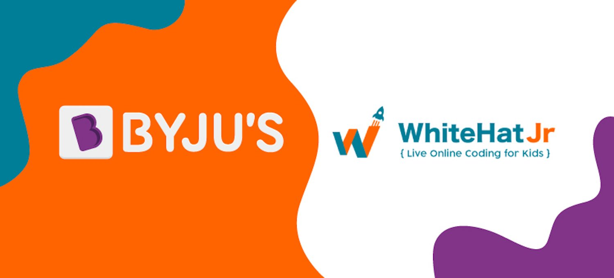

Hello I'm
RAYYAN HASAN GORAYA
Incoming Mathematics Student @ UWaterloo And Aspiring Game Developer
EMAIL ME
HIRE ME
ABOUT ME
I’m also a retired Flight Sergeant with the 540 Golden Hawks Royal Canadian Air Cadet Squadron from 2020 to 2025. Over the past five years, I’ve gained hands-on leadership experience in team management, peer mentorship, public speaking, and drill instruction. I’ve coordinated events, trained junior cadets, and completed multiple summer training programs. This role has taught me discipline, time management, and how to perform under pressure—skills I bring into every project and academic challenge.
 Throughout high school from 2021 to 2025 at White Oaks Secondary School, I developed strong problem-solving and programming skills through challenging coursework and independent projects. My Grade 11 Computer Science final project, “Ocean Grabber”—a fully developed 2D arcade game—earned me a perfect 100%. I designed it from the ground up using Python and Pygame, and documented it with a full GitHub repo and gameplay demo. It sharpened my understanding of game logic, user interface design, and software development principles.
Throughout high school from 2021 to 2025 at White Oaks Secondary School, I developed strong problem-solving and programming skills through challenging coursework and independent projects. My Grade 11 Computer Science final project, “Ocean Grabber”—a fully developed 2D arcade game—earned me a perfect 100%. I designed it from the ground up using Python and Pygame, and documented it with a full GitHub repo and gameplay demo. It sharpened my understanding of game logic, user interface design, and software development principles.
 I’m an incoming Mathematics student from 2025 to 2030 at the University of Waterloo with a strong passion for mathematics, computer science, and leadership. I strive to combine logic, creativity, and innovation to build meaningful technologies, and I’m always looking for ways to grow, lead, and make an impact. Not only do I know python, I’ve worked with JavaScript, HTML and CSS. I’ve created websites, small games, and utility tools, and I’m currently exploring Unity and Blender to expand my game development abilities. I love combining visual design with code to create interactive experiences, and I plan to dive deeper into AI/ML, algorithms, and software engineering during university.
I’m an incoming Mathematics student from 2025 to 2030 at the University of Waterloo with a strong passion for mathematics, computer science, and leadership. I strive to combine logic, creativity, and innovation to build meaningful technologies, and I’m always looking for ways to grow, lead, and make an impact. Not only do I know python, I’ve worked with JavaScript, HTML and CSS. I’ve created websites, small games, and utility tools, and I’m currently exploring Unity and Blender to expand my game development abilities. I love combining visual design with code to create interactive experiences, and I plan to dive deeper into AI/ML, algorithms, and software engineering during university.

MY JOURNEY TOWARDS COMPUTER SCIENCE
My journey into the world of coding began during the COVID-19 pandemic when I enrolled in WhiteHat Jr, an online coding platform later acquired by BYJU'S in 2020. This platform provided a structured introduction to programming, covering fundamental concepts such as logic, structure, sequencing, and algorithmic thinking. The immersive curriculum and hands-on projects, including building simple games and applications, ignited a passion for technology and problem-solving. The flexibility of the online format allowed me to dedicate significant time to practice and exploration, laying a solid foundation for my continued growth in the field of computer science. This early exposure not only equipped me with essential coding skills but also fostered a mindset of continuous learning and innovation, which I carry forward in my academic and personal projects.

Then I went on to continue my journey after leaving BYJU in 2022. I would explore differnt platforms like p5.js, visual studio code and watch youtube videos on how to use them and what are some important tools to use in vs. I advanced my learning in web development, using html, and css. I also learned a lot more about JavaScript and Python to create games. But recently I wanted to start creating more advanced 3D games using platforms like Unity and Unreal Engine. If you want to see some of my projects you can go to my Github account linked at the top.